Префектура Окаяма · Тамано · отель
«UNO HOTEL»: база для путешествий по островам Сэтоути
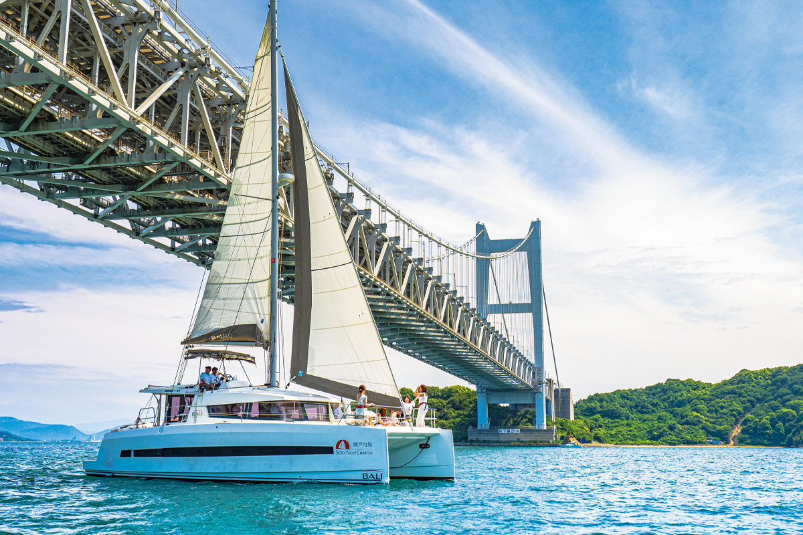
У порта Уно в Тамано стоит отель, из которого удобно уезжать на острова. От его причала уходят паромы на Наосиму и Тэсиму, а между поездками можно днём выйти в море и вернуться к ужину.
Порт
У ворот островов
Внутреннее Японское море окружено Хонсю, Сикоку и Кюсю. Климат здесь мягкий, а пейзаж это вереница островов. Ткацкие традиции Окаямы однажды соединились с американским денимом и дали «окаямский деним», а с 2010 года здесь проходит фестиваль искусства «Сэтоути», сделавший регион известным во всём мире.
Один из входов в этот мир это порт Уно. Здесь, в Тамано, работает «UNO HOTEL». Из отеля можно выйти в свободное плавание на яхте, занять необитаемый остров, порыбачить в богатом рыбой море. Есть и туры по островам: Наосима известна современным искусством, в том числе работами Яёи Кусамы (художница, родилась в 1929 году, прославилась горошинами и зеркальными комнатами), а Тэсима славна кухней.
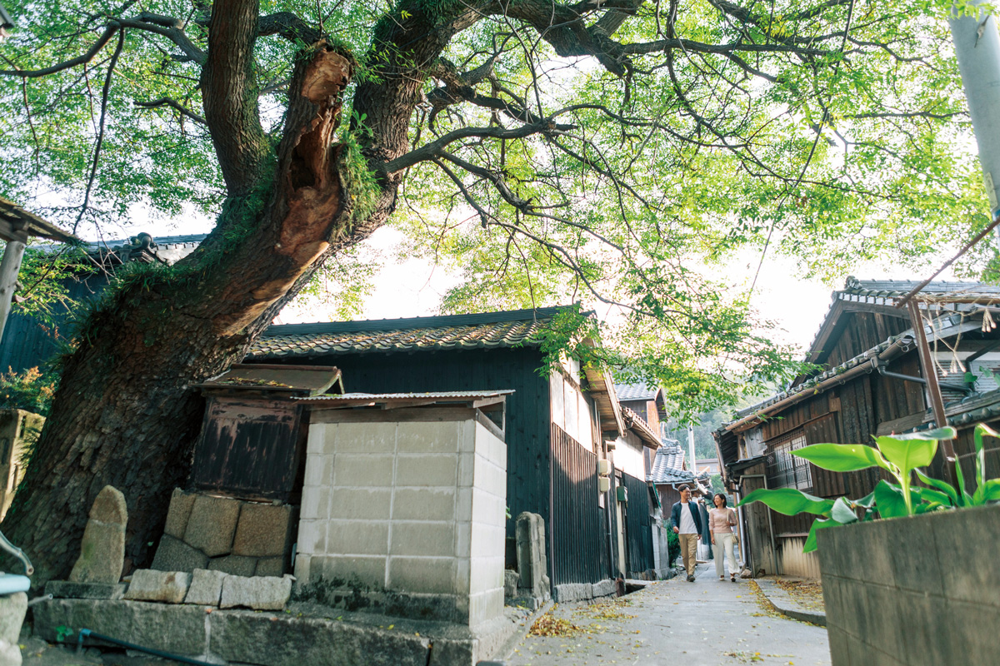
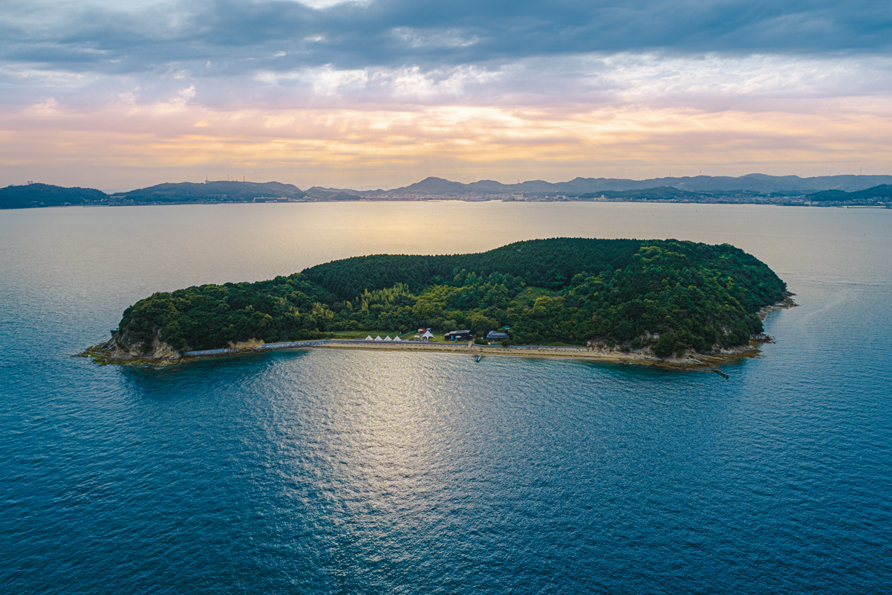
Номера
Синий цвет Окаямы
Номера отделаны в цвете индиго: так обыграна и местная культура окраски, и характер самого денима. Премиум-делюкс на 38 квадратных метров отделан синей тканью и выходит внутренним балконом к морю, а угловой сьют на 54 квадратных метра разделён на спальню и гостиную с кухней и кабинетом.
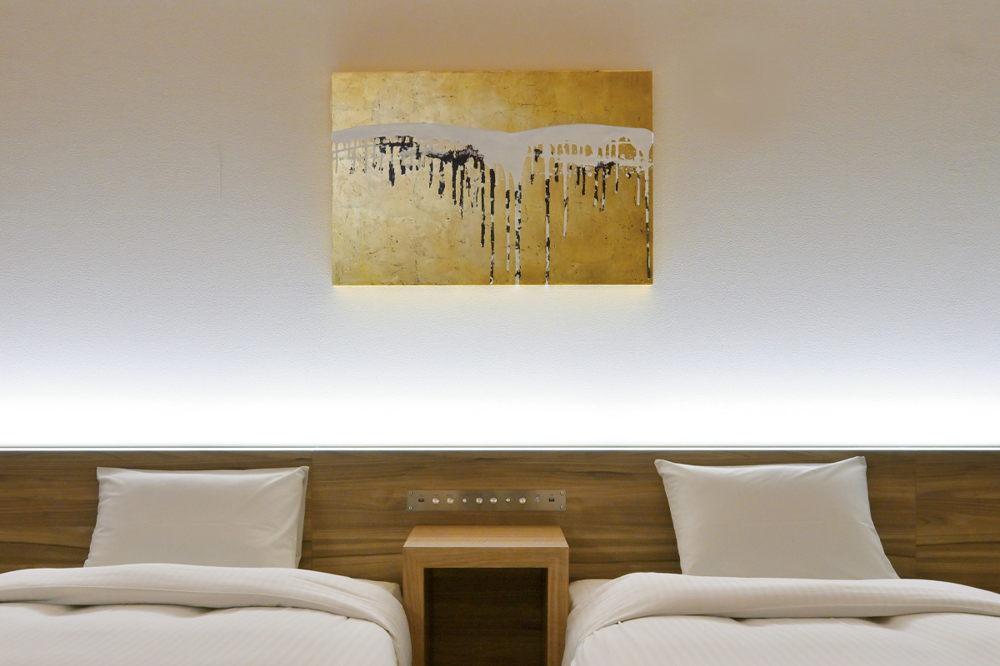
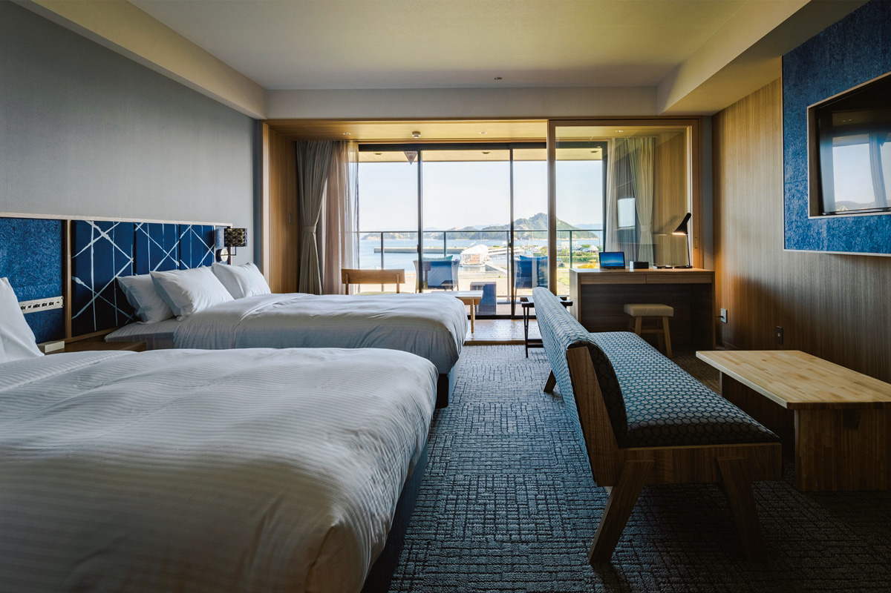
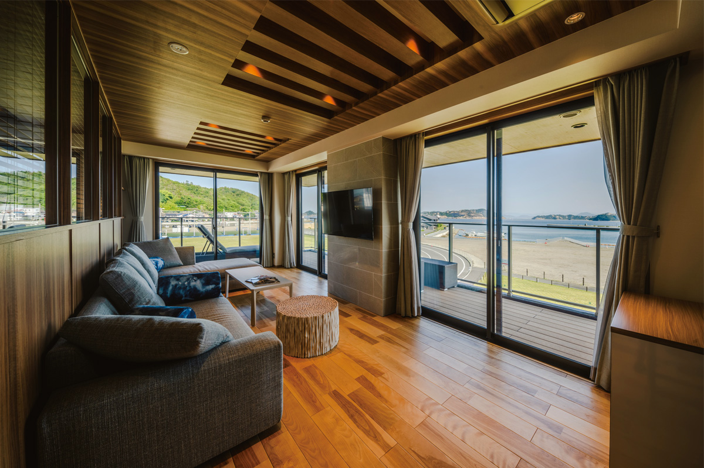
Искусство
Стены как галерея
В коридорах и залах выставляют работы арт-директора Сигэру Ямады, у которого мастерская в Окаяме, и художников из мастерской «Аригато фарм». Экспозиция меняется, поэтому при каждом приезде попадаются новые вещи.
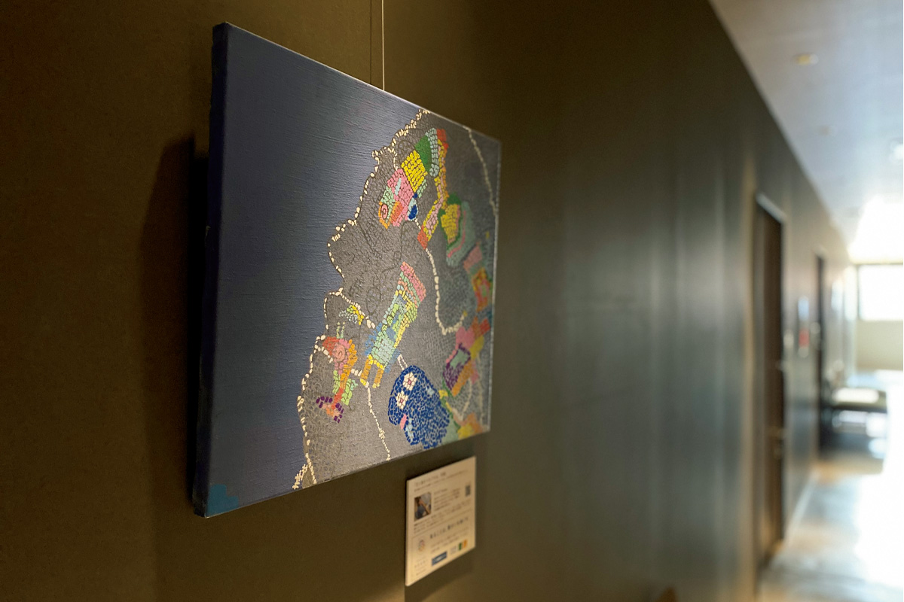
Еда
Французская кухня из продуктов Окаямы
В ресторане «Сэтоути BLUNO» готовят из местных овощей, свежей рыбы и говядины «тиягю». Шеф-повар объясняет это так: «В поездке хочется пробовать местное и сезонное». Ужин предлагают в двух вариантах, «SOIR» и «LUMIERE», и блюда здесь выкладывают на тарелку как картины.
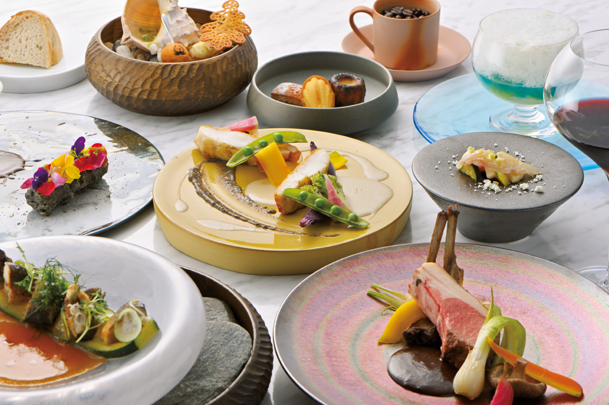
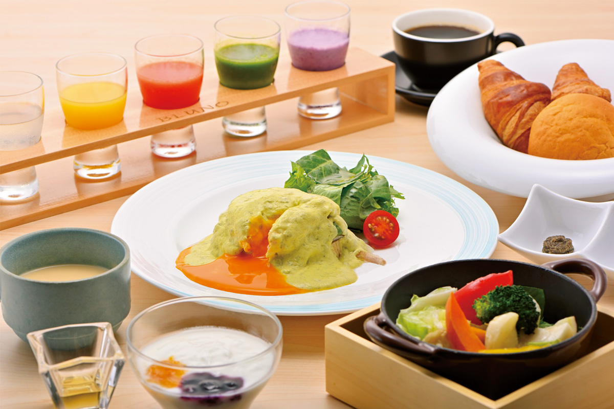
Онсэн
«Тамано-ю» в трёх минутах
В трёх минутах ходьбы от отеля находится онсэн «Сэтоути тамано-ю». Его открытые ванны обращены к морю: вода в них будто меняется вместе с видом на залив.
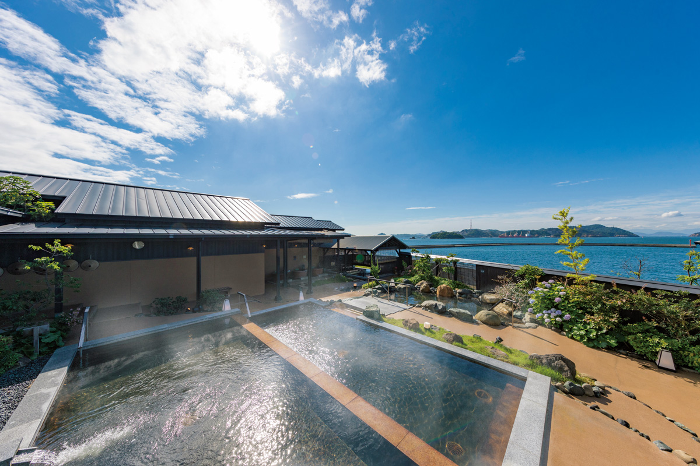
Знак
Кедр у входа
Перед входом растёт гималайский кедр, символ «UNO HOTEL». Гости часто фотографируются здесь на память.
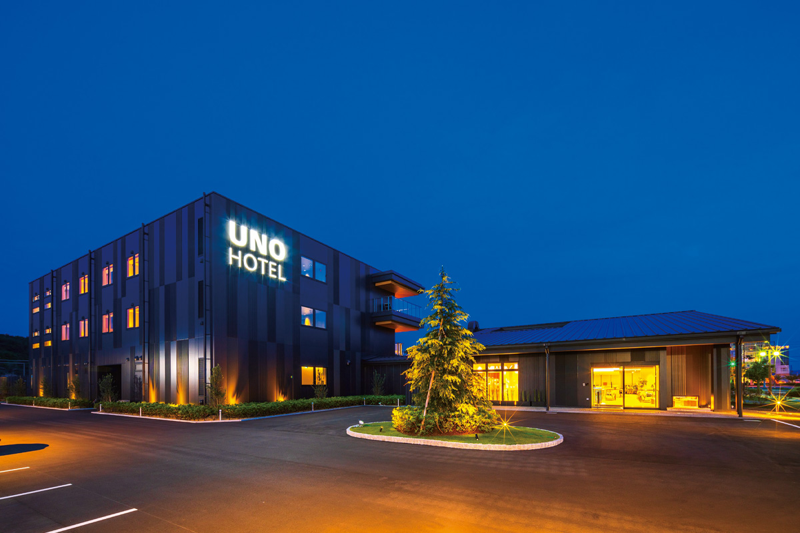
UNO HOTEL
- Адрес
- префектура Окаяма, Тамано, Тикко, 1-1-12
- Телефон
- +81 863-33-0551
- Номера
- 28 (плюс отдельные комнаты на 28 мест)
- Цены
- в 2023 году от 14 650 иен за человека за ночь с двумя приёмами пищи (с налогом и сервисным сбором), в стоимость входит купон на онсэн «Тамано-ю»; актуальные смотрите на сайте
- Заезд / выезд
- 15:00 / 11:00
- Как добраться
- одна минута пешком от станции Уно
- Сайт
- uno-hotel.com